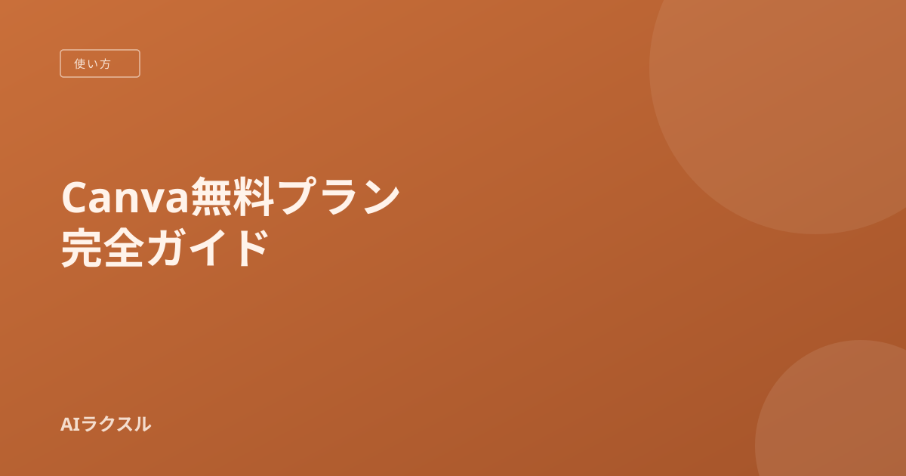

Canva無料プランでできること完全ガイド まず課金する前に読む
SNS投稿画像やちょっとしたチラシ作りに便利なCanva。「無料版でどこまでできるのか」を整理して、有料プランを検討すべきタイミングも合わせて紹介します。
Canvaとは
Canvaは、テンプレートを選んで文字や画像を差し替えるだけで、SNS投稿画像・プレゼン資料・チラシなどが作れるオンラインデザインツールです。デザインの知識がなくても、それらしい見た目のものが短時間で作れるのが特徴です。
無料プランでできること
- 豊富なテンプレートを使ったデザイン作成（SNS投稿・名刺・プレゼン資料など）
- 無料素材（写真・イラスト・アイコン）の利用
- 作成したデザインのPNG・JPG・PDF形式での書き出し
- 簡単な画像加工（背景色の変更、テキスト装飾など）
個人利用やちょっとした副業レベルであれば、無料プランの機能だけで完結するケースも多くあります。
有料プラン（Canva Pro）で追加されること
Canva Proにアップグレードすると、有料テンプレート・有料素材の利用、背景除去機能、ブランドキットの管理といった機能が使えるようになります。プランの詳細な内容や料金は変更されることがあるため、検討する際は必ず公式サイトの最新情報を確認してください。
| 利用シーン | 無料プランで足りるか |
|---|---|
| 個人のSNS投稿画像作成 | 足りることが多い |
| 友人・家族向けの簡単な招待状やチラシ | 足りることが多い |
| クライアントワークとしての継続的な素材制作 | 有料素材や背景除去が必要になり不足しがち |
| 会社のブランドカラー・ロゴを統一して使う運用 | ブランドキット機能が必要になり不足しがち |
まず無料で試すときのコツ
1. 目的に近いテンプレートから始める
「SNS投稿」「プレゼンテーション」など、作りたいものに近いテンプレートを検索窓から探すと、ゼロから作るより圧倒的に早く仕上がります。
2. 無料素材だけで完結するか確認する
テンプレートの中には有料素材が混ざっていることがあります。要素をクリックした際に王冠マークが表示されるものは有料素材なので、無料の範囲で作りたい場合は別の素材に差し替えましょう。
判断の目安
「無料素材だけでやりたいことが実現できているか」「王冠マークの有料素材を頻繁に使いたくなっているか」の2点で、有料化を検討するタイミングを判断するのがおすすめです。
次に読みたい
2026年版 無料で使えるAIツールまとめ 目的別に厳選では、Canva以外の無料AIツールも目的別に紹介しています。
本記事で紹介したサービスの一部には、A8.netを通じたアフィリエイトリンクを含む場合があります。詳細は運営者情報・免責事項をご覧ください。料金・機能は執筆時点の情報のため、最新情報は公式サイトをご確認ください。